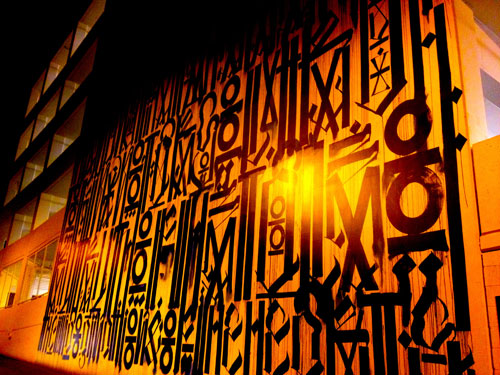

Retna

Popular street artist RETNA (Marquis Lewis) has been scrawling his signature tags across LA since he was in high school—the now 34-year-old artist, who is beloved by the likes of Jeffrey Deitch, had his first major NYC solo show last month, converting a massive downtown warehouse into "his own kind of temple." This week, the artist took to the East Village to paint a massive mural on Houston and Bowery he previously has had murals up in DUMBO, but never anything like this.